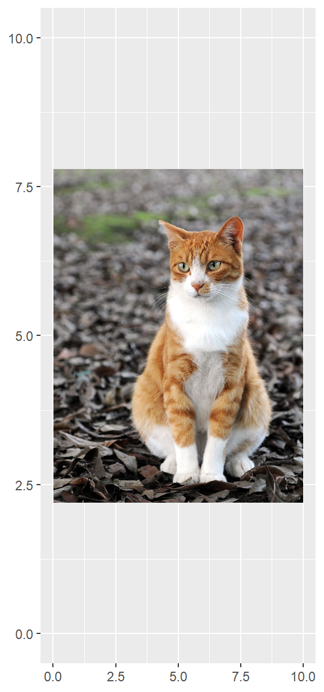

library(tidyverse)Cédula Elecciones 2020 usando ggplot2 (parte 3)
En el post anterior logramos agregarle texto al esqueleto de nuestra cédula. Ahora debemos aprender a agregarle imágenes. Iniciamos, como siempre, haciendo uso de nuestros paquetes predilectos.
Lo básico
Para poder entender cómo se logra insertar los logos de los partidos políticos hace falta primero entender cómo insertar imágenes a un gráfico de ggplot2. Hasta la fecha, la forma más conveniente que he encontrado es haciendo uso de annotation_custom(). Esta función toma como primer argumento un grob, un objeto que sirve como bloque básico de construcción de todos los gráficos de ggplot2. Para lo que buscamos hacer, colocar los logos de los partidos dentro del gráfico, necesitamos convertir nuestras imágenes en grobs.
Para que R interprete nuestras imágenes, hacemos uso de la función load.image() del paquete imager. Con el objeto obtenido hacemos uso de la función rasterGrob() del paquete grid, para obtener el grob necesario. Finalmente, annotation_custom() nos permite colocar el grob usando una sintaxis muy similar a la que hemos usado anteriormente con geom_rect(). Con el siguiente ejemplo, que usa el logo de esta página, debería quedar más claro.
url_ejemplo <- "https://upload.wikimedia.org/wikipedia/commons/thumb/6/68/Orange_tabby_cat_sitting_on_fallen_leaves-Hisashi-01A.jpg/800px-Orange_tabby_cat_sitting_on_fallen_leaves-Hisashi-01A.jpg"
imagen_ejemplo <- imager::load.image(url_ejemplo)
grob_ejemplo <- grid::rasterGrob(imagen_ejemplo)
ggplot()+
xlim(c(0,10))+
ylim(c(0,10))+
annotation_custom(grob = grob_ejemplo,
xmin = 0, xmax = 10,
ymin = 0, ymax = 10)
Lo real
Ahora que hemos entendido cómo funciona el procedimiento de agregar las imágenes, estamos listos para agregar los logos a nuestra cédula. Podríamos repetir el procedimiento anterior por cada partido en contienda, sin embargo, aprovechemos las ventajas de usar R para hacerlo más rápido (no necesariamente más sencillo).
Lo primero será tener los enlaces a todos los logos de los partidos. Esto es posible debido a que el portal Voto Informado cuenta con todos ellos. El vector logo_url fue creado manualmente para contener todos los logos, a excepción del de Todos por el Perú debido a que fue eliminado de la contienda por el JNE. En nuestro vector aparece como un NA.
logo_url <- c(
"https://votoinformado.jne.gob.pe/voto/Resources/imgs/logoop/2160.JPG",
"https://votoinformado.jne.gob.pe/voto/Resources/imgs/logoop/1366.JPG",
"https://votoinformado.jne.gob.pe/voto/Resources/imgs/logoop/1264.JPG",
"https://votoinformado.jne.gob.pe/voto/Resources/imgs/logoop/55.JPG",
NA,
"https://votoinformado.jne.gob.pe/voto/Resources/imgs/logoop/1257.JPG",
"https://votoinformado.jne.gob.pe/voto/Resources/imgs/logoop/2840.JPG",
"https://votoinformado.jne.gob.pe/voto/Resources/imgs/logoop/4.JPG",
"https://votoinformado.jne.gob.pe/voto/Resources/imgs/logoop/2173.JPG",
"https://votoinformado.jne.gob.pe/voto/Resources/imgs/logoop/5.JPG",
"https://votoinformado.jne.gob.pe/voto/Resources/imgs/logoop/2731.JPG",
"https://votoinformado.jne.gob.pe/voto/Resources/imgs/logoop/47.JPG",
"https://votoinformado.jne.gob.pe/voto/Resources/imgs/logoop/14.JPG",
"https://votoinformado.jne.gob.pe/voto/Resources/imgs/logoop/2191.JPG",
"https://votoinformado.jne.gob.pe/voto/Resources/imgs/logoop/32.JPG",
"https://votoinformado.jne.gob.pe/voto/Resources/imgs/logoop/2649.JPG",
"https://votoinformado.jne.gob.pe/voto/Resources/imgs/logoop/2646.JPG",
"https://votoinformado.jne.gob.pe/voto/Resources/imgs/logoop/2235.JPG",
"https://votoinformado.jne.gob.pe/voto/Resources/imgs/logoop/2218.JPG",
"https://votoinformado.jne.gob.pe/voto/Resources/imgs/logoop/2190.JPG",
"https://votoinformado.jne.gob.pe/voto/Resources/imgs/logoop/22.JPG",
"https://votoinformado.jne.gob.pe/voto/Resources/imgs/logoop/15.JPG"
)Ahora que contamos con los enlaces, creamos una función que nos permita repetir el proceso de crear los grobs, de tal modo que podamos usarla sistemáticamente. La función que estamos creando, grob_url(), devuelve los valores NA. El argumento interpolate = TRUE dentro de grid::rasterGrob() ayuda a mejorar la calidad de la imagen.
grob_url <- function(fileurl){
if(is.na(fileurl)) return(NA)
img <- imager::load.image(fileurl)
grob <- grid::rasterGrob(
img,
interpolate=TRUE)
grob
}Ahora que contamos con una función que cumple nuestros objetivos, la aplicamos a todos los enlaces contenidos en logo_url. Para ello hacemos uso de la función map() del paquete purrr. Debido a que map() siempre nos devuelve una lista, usamos la función tibble() para crear un objeto tibble con una sola columna (grob), que contiene cada uno de nuestros grobs. Es el mismo nombre que el primer argumento de annotation_custom(), y tiene un motivo que descubriremos más adelante. El objeto grob ahora es una tabla que contiene listas en su única columna, pero nos permite trabajar con ella como si fuera cualquier data.frame normal.
grob <- map(logo_url, grob_url) %>%
tibble(grob = .)
head(grob)# A tibble: 6 × 1
grob
<list>
1 <rastrgrb>
2 <rastrgrb>
3 <rastrgrb>
4 <rastrgrb>
5 <lgl [1]>
6 <rastrgrb>Ahora podemos hacer uso de annotation_custom() en cada uno de nuestros grobs. Recordemos los argumentos que esta función necesita:
grob: Es el grob que será dibujado en el gráfico.xmin: El primer valor del eje X, o posición de la esquina izquierda de la imagen.xmax: El segundo valor del eje X, o posición de la esquina derecha de la imagen.ymin: El primer valor del eje Y, o posición de la esquina inferior de la imagen.ymax: El segundo valor del eje Y, o posición de la esquina superior de la imagen.
Ya tenemos nuestros grobs mapeados en el tibble grob, ahora necesitamos los otros cuatro argumentos. Sin embargo, estos ya los teníamos desde hace muchísimo antes. Están contenidos en el tibble preferencial que creamos en la primera parte cuando usamos geom_rect() para dibujar los cuadros para voto preferencial.
head(preferencial)# A tibble: 6 × 4
xmin xmax ymin ymax
<dbl> <dbl> <dbl> <dbl>
1 10.8 11.8 27.3 28.3
2 10.8 11.8 26.1 27.1
3 10.8 11.8 24.9 25.9
4 10.8 11.8 23.7 24.7
5 10.8 11.8 22.5 23.5
6 10.8 11.8 21.3 22.3Entonces, lo que necesitamos hacer ahora es unir ambos tibbles con bind_cols() del paquete dplyr(). Luego usamos filter() para librarnos del valor NA porque ya no es útil (de hecho, si lo dejamos ocasionaremos un bug que me costó más tiempo del debido identificar). Finalmente, utilizamos pmap() del paquete purrr para usar cada fila de nuestri tibble como lista de argumentos de annotation_custom(). Con esto, hemos conseguido la lista annotations con la que podemos graficar todos los logos.
annotations <- grob %>%
bind_cols(preferencial) %>%
filter(!is.na(grob)) %>%
pmap(annotation_custom)Sin embargo, unir todos los annotations no es tan sencillo como hacer cedula + annotations debido a que annotation_custom() no se comporta como un geom_*. Será necesario crear una función que nos permita hacer una suma recursiva de todos los elementos: rec_ggadd() toma un objeto de ggplot2 y una lista para añadir recursivamente sus elementos al objeto. El tercer argumento es un iterador que permite la recursividad, y no necesita ser identificado por quien use la función.
rec_ggadd <- function(ggobj, lista, i = length(lista)){
if(i == 1){
ggobj + lista[[i]]
} else {
ggobj <- ggobj + lista[[i]]
rec_ggadd(ggobj, lista, i = i-1)
}
}Ahora sí, sólo queda aplicar la función a nuestra cedula y habremos conseguido lo que tanto deseábamos.
cedula <- rec_ggadd(cedula, annotations)Imprimimos cedula para ver que todo salió bien.
cedulaggsave("cedula-parte-3.png", cedula)Saving 3 x 6.4 in image